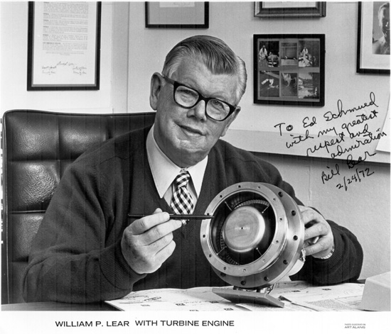
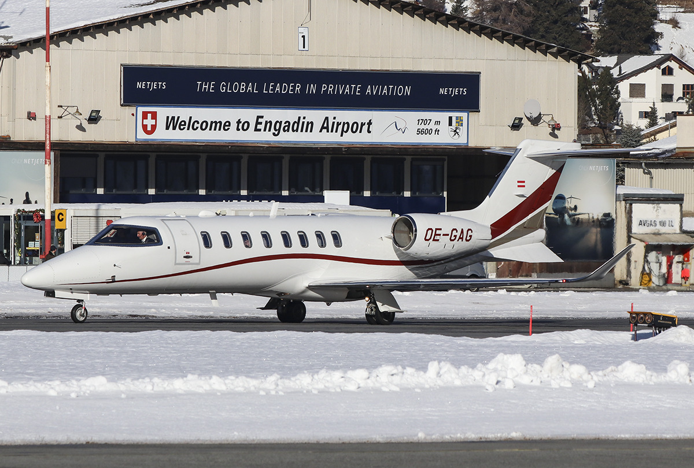
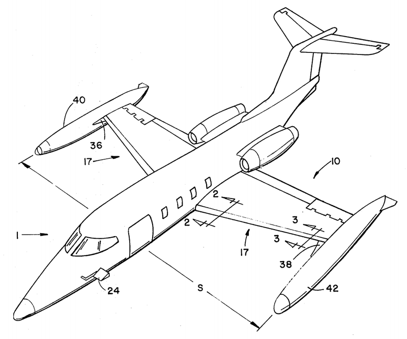

“Engineer, Inventor, Entrepreneur and Genius”- Yes, Bill Lear was the Tony Stark in flesh and bones of his time. A self-taught radio engineer and an inventor, he received over 120 patents throughout his life. Starting in his 30s, he started work on radio direction finders and other avionics related products. He is famously credited for developing the world’s first Fully Automatic Aircraft Landing System.
But this is where all of it had begun- He moved to Switzerland, founded the Swiss American Aviation Company in 1960 and started work on the World’s First Private Business Jet with his team of design engineers from Switzerland, Germany and Britain. The proposed SAAC 23, was to be a redesigned version of the Swiss FFA P-16 fighter. Although SAAC didn’t last long, they had a test pilot to be proud of- King Michael I of Romania.

Bill Lear with turbine engine. Photo: Unknown via wikipedia.org
Things didn't go as planned. Lear ended up moving back to the States to set up their factory in the Air Capital of the World - Wichita, Kansas which ever since, remains home to numerous aircraft manufacturers even today, some of the renowned ones being Beechcraft and Cessna.
In 1963, Learjet started tests on its Learjet 23 aircraft. It was fabulous and it was fast. Even with the capacity of carrying 8 passengers while flying at a whopping 560 mph, it still cost $400,000 less than its competitors. The company had taken off. Soon, it was producing about 70 aircrafts every year. Work began on the Model 24 and Model 25, both of which flew in 1966.
But the company was not free of financial problems. In the late 60s, Bill Lear had to sell his 60% share in the venture to Gates Rubber Company, Colorado. Following further mergers it was then renamed to Learjet Corporation in 1987.

OE-GAG Private Learjet 75. Photo: Ruby Alllesina via planespotters.net
By 1974, all of the Learjet aircrafts around the world had in total accumulated a flight time of over a million flight hours and in 1975, Learjet produced its 500th aircraft. Sadly, this was also the year when Learjet lost its mastermind, Bill Lear. Nevertheless, Learjet continued to soar to greater heights. As 1977 came by, the Learjet 28, was being experimented on with new wings. These wings had winglets, which reduced the drag and fuel consumption by 4% to 5% per plane per year. Learjet was one of the very first ones to do this with their business jets.
In 1983, the Model 54/55/56 made a grand entrance into production and had already set six time-to-climb records for its weight class. As time flew by, Learjet slowly moved to designing aircrafts that could carry more passengers. A prime example of the same being Learjet 55. Its stretched cousin- the Learjet 60, the Learjet 35 and the Learjet 45 were regarded as the most successful aircrafts ever built by the manufacturer. Combined, about 1,800 units were produced.

Gates Learjet patent filed June 24, 1976, showing the initial learjet configuration with tip tanks. Photo: Gates LearJet Corp via wikipedia.org
However, owing to its financial problems, it was acquired by Bombardier Aerospace in 1990. The family of aircrafts was then marketed as the Bombardier Learjet Family. Under the Canadian outfit, Learjet continued to prosper. It produced its 3,000th aircraft in June 2017. Bombardier Learjet announced the Learjet 85 at the Farnborough Airshow in 2008. Dolorously enough, the program was then canceled.
In February 2021, Bombardier announced that production would be terminated for all new Learjet aircrafts in 2021, with continuation of support and maintenance for aircrafts in service. The production might have ended, but the legacy of Learjet and Bill Lear will continue to live on gloriously into the future.